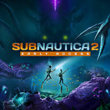

Actualización de desarrollo
El equipo de Unknown Worlds ha confirmado que el juego incluirá mejoras significativas en la IA de las criaturas y un sistema de crafting más profundo.
Estoy recomendando Subnautica 2 ya que es un juego muy intuitivo y entretenido. Podés explorar un planeta lleno de criaturas fascinantes y recursos valiosos.

Subnautica 2 llegará a PC en acceso anticipado en mayo de 2026, tras un retraso desde su previsión inicial de 2025. Aunque el precio oficial no está confirmado, se estima que rondará los 29,99 €, mismo precio de lanzamiento del juego anterior. El título será desarrollado en Unreal Engine 5.
El equipo de Unknown Worlds ha confirmado que el juego incluirá mejoras significativas en la IA de las criaturas y un sistema de crafting más profundo.
Juego de exploración y supervivencia submarina.
Aventura en mundo abierto con libertad total.
Construcción y creatividad con bloques.
| Subnautica 2 | Breath of the Wild | Minecraft |
|---|---|---|
| Exploración submarina | Aventura en mundo abierto | Construcción creativa |
| Plataforma: PC | Plataforma: Nintendo Switch | Plataforma: PC / Consolas / Móvil |
| Lanzamiento: 2026 (acceso anticipado) | Lanzamiento: 2017 | Lanzamiento: 2011 |
| Desarrollador: Unknown Worlds | Desarrollador: Nintendo | Desarrollador: Mojang Studios |
| Modo: Un jugador | Modo: Un jugador | Modo: Un jugador / Multijugador |
Estos juegos comparten elementos de exploración y creatividad, pero cada uno ofrece experiencias únicas. Subnautica 2 se enfoca en el terror y la supervivencia bajo el agua, mientras que Breath of the Wild es puro open-world y Minecraft es sandbox puro.